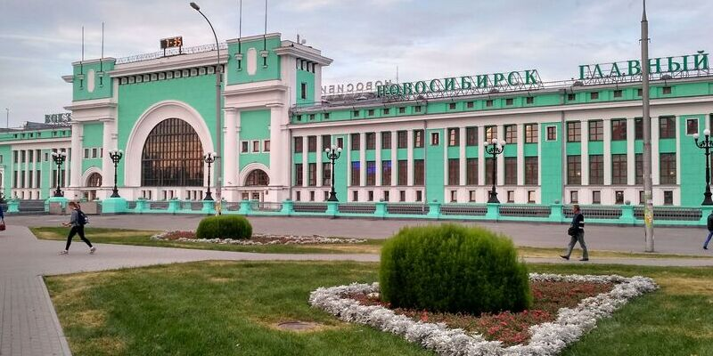
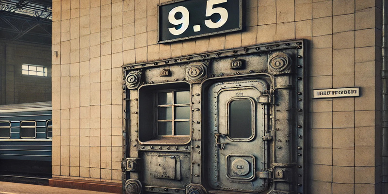

Чтоб попасть в Колдовстворец, проще всего приехать в Новосибирск, портальный российский узел Далее необходимо зайти в этот вокзал  Найти дверь 9.5, она покажется волшебнику сама по себе  Выбрав портал №9, вы попадаете в Колдовстворец